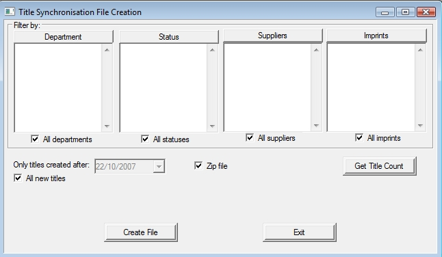
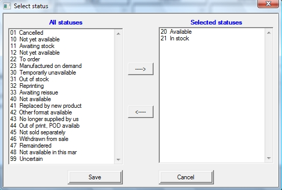
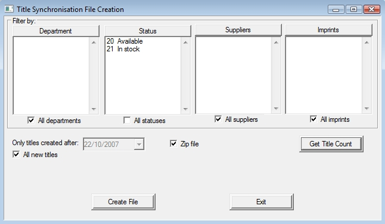
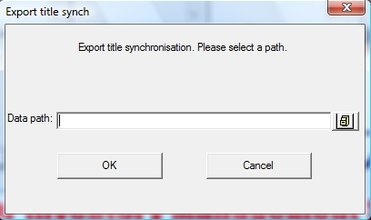
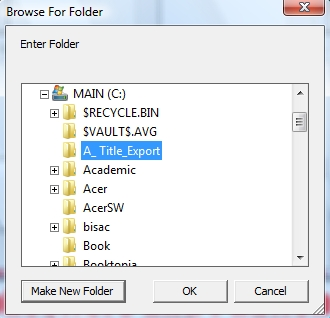
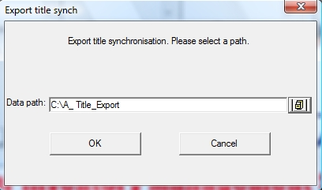
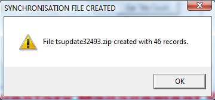

This section is useful for multiple site stores where you wish to send the new titles entered on your site in a file to be loaded in at the other site. This can prevent double keying of products.
From the main menu, select Purchasing->Transfers->Title Synchronisation.

By default, as shown in the image above, will export all new products that have been added, since this was last run. If this has not been run before, it will export most of the products in your Title Master. It will also put the files into a zip archive (which makes it smaller for sending).
Settings for export
You can make changes to exclude any of the following (By using it to pick only what you wish to Include);
·
Department
·
Status
·
Suppliers
·
Imprints
Click on the button, e.g. Status.
The window that displays will show on the left-hand side All of the option, in this case Status and on the right-hand side what you wish to use for inclusion. (what remains on the left will be excluded)

Simply double click on items on the left-hand side and they will move to the right-hand side.
Click Save button when done.

When it returns to the main window, it will look like this.
This can be done in combination with all 4 of the options.
Product Export Count
To know how many products will be exported, before doing so, simply click the Get Title Count button, this will then display a message indicating the number of titles that will be exported if you save now.
Next Click Create Filebutton when happy to save.

Next a window will appear to select the path to save the files to. Click this icon to select the location (for advanced users, you can simply type the full path name in this box instead). If you have run this before, the location it was saved last time will show in this window, if this is the case, its best you keep using the same location (else make a new folder shown in the image below).

Select the folder you wish to save in, then click OK button.

When happy with the path, click the OK button.

What it will then finally show is a message to indicate that the file has been created, its name ( in this case tsupdate32493.zip )and also the number of products, or records saved in this file.
Note: The files saved are namedtsupdate(number).DBF andtsupdate(number).FPT. If you have the zip file option selected as mentioned above these two files will be saved within the zip file, which will be called tsupdate(number).zip.
You will need to transfer the files manually for import at the other site, (email, CD or USB drive) if zipped. You can have e-Comms transfer the files by leaving the Zip file option unselected & saving to the Transfer -> Toho folder in your database folder. You will still need to use the Import from disk window to import the synchronisation file. It will be located in the Transfer -> Fromho folder in your database folder at that location.